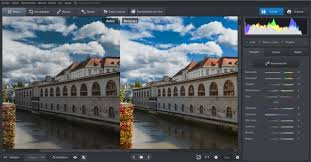

Bienvenido a nuestra plataforma de edición fotográfica online, diseñada para que cualquier persona pueda crear imágenes impactantes de forma rápida y sencilla.
No necesitas experiencia en diseño: con nuestras herramientas intuitivas podrás mejorar tus fotos, añadir efectos, aplicar filtros y personalizar cada detalle en cuestión de minutos.
Obtén rápidamente imágenes de calidad profesional sin tener habilidades para el diseño.
Es increíblemente fácil mejorar tus imágenes con sombras, contornos y muchos efectos más.
También puedes pintar efectos exactamente donde quieras.
O puedes añadir palabras o formas a tus fotos. Tenemos las herramientas que necesitas para obtener esa imagen que deseas.
"Muy fácil de usar y con excelentes filtros."
"Buena edición y sin descargas."
"Funciona para lo básico."
Hoy se lanzó un innovador editor de fotos en línea que promete facilitar la edición de imágenes para usuarios de todos los niveles.
La plataforma ofrece filtros, recortes, ajustes de brillo y contraste, y algunas funciones avanzadas de forma gratuita.
Según los desarrolladores, el objetivo es brindar una experiencia rápida e intuitiva sin necesidad de descargar software.
Usuarios que probaron la web destacaron su facilidad de uso y la calidad de los resultados.
1. ¿Es gratis usar el editor? Si, es gratis
2. ¿Necesito descargar algo? No, no tienes que descargar nada
3. ¿Puedo guardar mis fotos? Si, puedes guardar tus fotos
4. ¿Funciona en móviles? Si, es compatible con tablets y smartphones